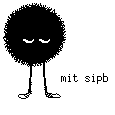
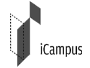

|
|
The Library Access to Music Project has ended. [October 11, 2016] LAMP closes after 15 years of the project, and 13 years after the library first opened in October 2003. More than 4,100 distinct members of the MIT community served as "DJs" during that time, playing about 90 songs each day for the last 13 years. SIPB hosted a party on campus to commemorate the end of the project.
The opening (2003):
The closing (2016): [April 25, 2009] LAMP is up to 1,915 CDs. [March 27, 2009] LAMP is now in stereo. Please send questions, comments, and bug reports to lamp@mit.edu.
| About LAMP LAMP Receives Grant from StreetFire Sound Labs (October 21, 2004) Pictures of LAMP interface, equipment, creators Winstein's Master's Thesis (January 31, 2005) Mandel's Senior Project: LAMP Web interface (May 9, 2005) Original grant proposal (Nov. 12, 2001)
Older stuff (October 2003) MIT Press Release on First Opening (Oct. 27, 2003) Loudeye Press Release on First Opening (Oct. 27, 2003) MIT Statement: LAMP Closes Temporarily (October 31, 2003) LAMP software (Oct. 27, 2003)
Press coverage Tech Talk (May 22, 2002), The Tech (March 7, 2003), The New York Times (October 27, 2003), The Associated Press (October 27, 2003), USA Today (October 27, 2003), The Boston Globe (October 27, 2003), NPR Morning Edition (October 27, 2003), San Jose Mercury News (October 27, 2003), Ars Technica (October 27, 2003), Slashdot (October 27, 2003), Fark (October 27, 2003), The Associated Press (November 1, 2003), The Boston Globe (November 1, 2003), Slashdot, (November 1, 2003), Fark (November 2, 2003), The New York Times (November 3, 2003), The Seattle Times (November 5, 2003), The Tech (November 7, 2003), The Tech (February 17, 2004), The Tech (April 23, 2004), The Tech (August 4, 2004), LinuxDevices (October 25, 2004), Slashdot (October 25, 2004), Freedom to Tinker (October 25, 2004), The Tech (October 26, 2004), The Wall Street Journal (April 6, 2006). |
|  |  |
LAMP was a joint project of the MIT Student Information Processing Board (Josh Mandel/Quentin Smith/Keith Winstein) and MIT Cable Television (Randy Winchester/Jon Ward). LAMP was generously supported by MIT iCampus (MIT/Microsoft Research) and StreetFire Sound Labs, and was supervised by Professor Hal Abelson.